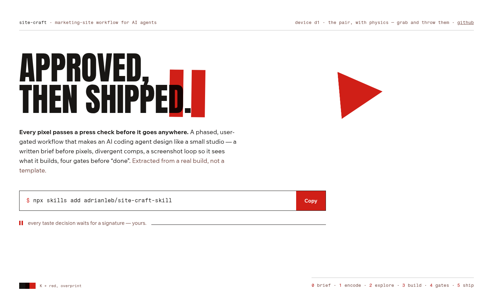
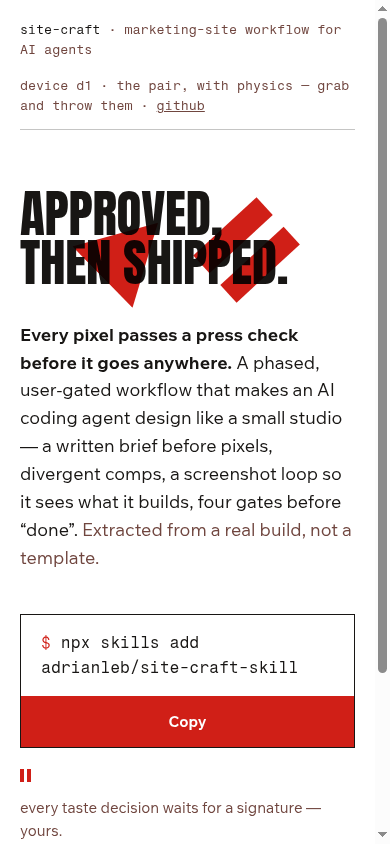
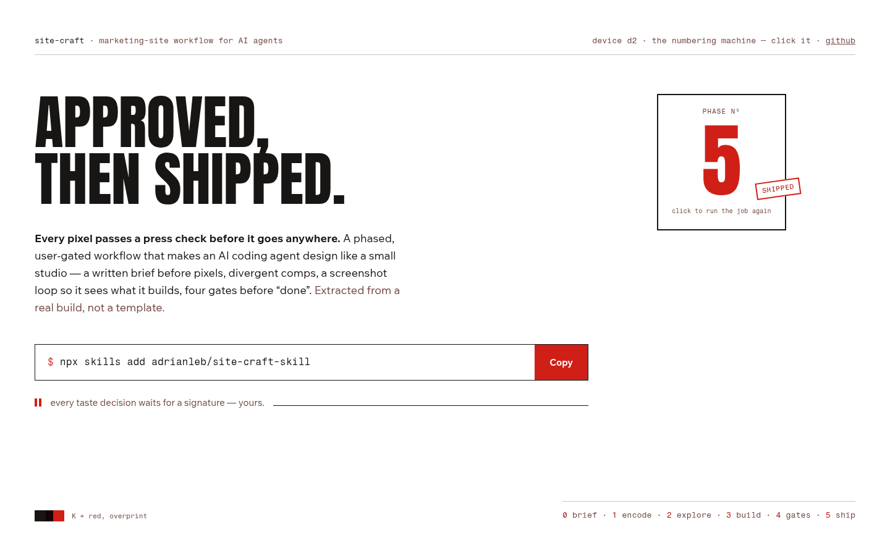
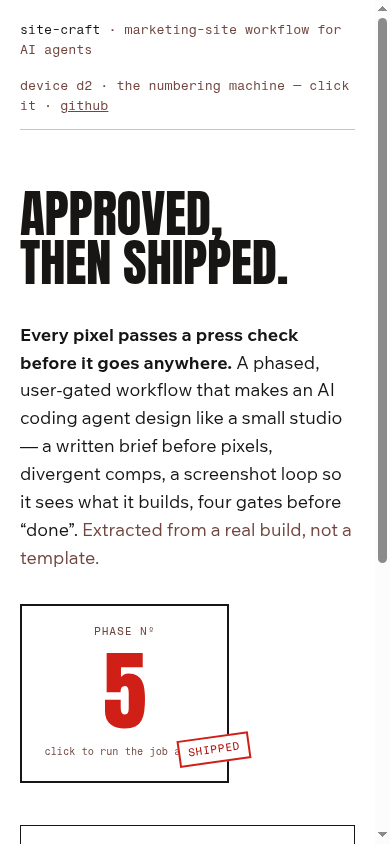
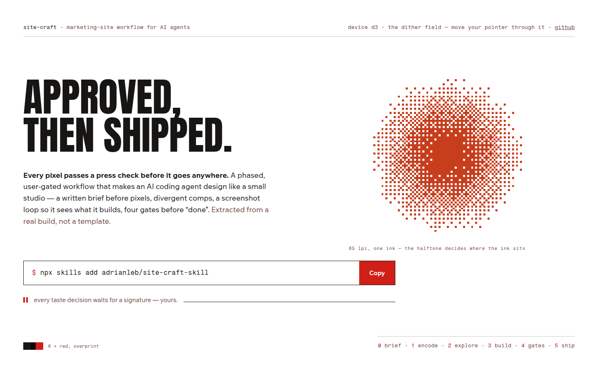
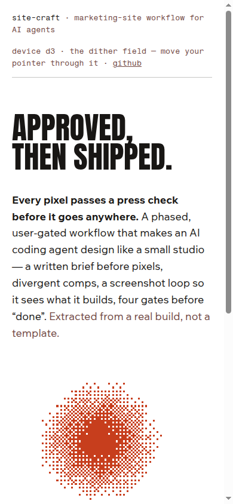
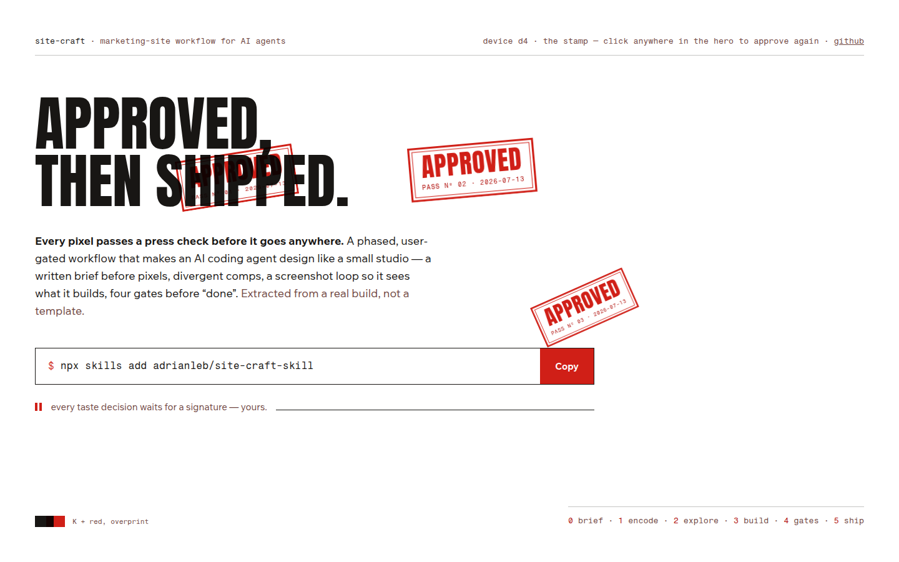
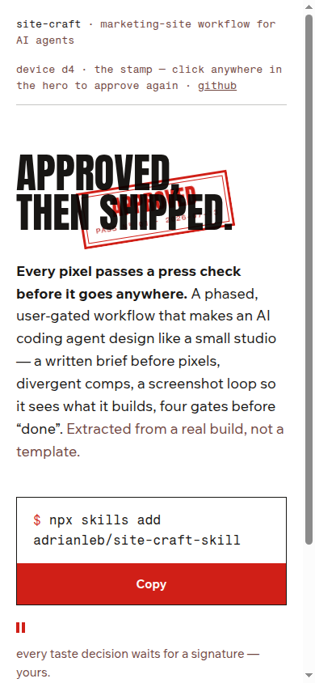

<title>site-craft · round 2.5 — the device audition</title>
<style>
  :root{
    --paper:#ffffff; --ink:#20241a; --olive:#4b521f; --olive-soft:#5c6430;
    --signal:#b8431c; --muted:#666c4e; --hair:#4b521f2e; --panel:#f6f6f0;
    --mono:ui-monospace,"SF Mono","Cascadia Mono",Menlo,Consolas,monospace;
  }
  @media (prefers-color-scheme: dark){
    :root{ --paper:#181a12; --ink:#e6e7da; --olive:#c0ca70; --olive-soft:#a8b25c;
           --signal:#ff9166; --muted:#a3a98a; --hair:#c0ca7038; --panel:#20231736; }
  }
  :root[data-theme="dark"]{ --paper:#181a12; --ink:#e6e7da; --olive:#c0ca70; --olive-soft:#a8b25c;
           --signal:#ff9166; --muted:#a3a98a; --hair:#c0ca7038; --panel:#20231736; }
  :root[data-theme="light"]{ --paper:#ffffff; --ink:#20241a; --olive:#4b521f; --olive-soft:#5c6430;
           --signal:#b8431c; --muted:#666c4e; --hair:#4b521f2e; --panel:#f6f6f0; }
  html{ background:var(--paper); }
  body{
    margin:0 auto; max-width:66rem; padding:3rem 1.25rem 5rem;
    background:var(--paper); color:var(--ink);
    font:400 1rem/1.6 system-ui,-apple-system,"Segoe UI",sans-serif;
  }
  header.top{ margin-bottom:3rem; }
  .kicker{ font-family:var(--mono); font-size:0.8125rem; color:var(--muted); margin:0 0 0.75rem; }
  h1{ font-size:clamp(1.6rem,4vw,2.3rem); line-height:1.15; margin:0 0 0.75rem; letter-spacing:-0.015em; text-wrap:balance; }
  .intro{ max-width:62ch; color:var(--ink); margin:0; }
  .intro b{ color:var(--olive); }

  nav.toc{ margin:1.5rem 0 0; font-size:0.9375rem; display:flex; flex-wrap:wrap; gap:0.4rem 1.4rem; padding:0; }
  nav.toc a{ color:var(--olive); }

  section.comp{ border-top:1px solid var(--hair); padding-top:2rem; margin-top:3rem; }
  .comphead{ display:flex; justify-content:space-between; align-items:baseline; gap:1rem; flex-wrap:wrap; margin-bottom:0.4rem; }
  .comphead h2{ font-size:1.35rem; margin:0; letter-spacing:-0.01em; }
  .comphead h2 .no{ color:var(--signal); font-family:var(--mono); font-size:1.05rem; margin-right:0.5rem; }
  .face{ font-family:var(--mono); font-size:0.8125rem; color:var(--muted); }
  .thesis{ max-width:70ch; margin:0.25rem 0 1.5rem; font-size:1.0625rem; }
  .thesis b{ color:var(--olive); }

  figure{ margin:0 0 1rem; }
  figure img{ width:100%; height:auto; display:block; border:1px solid var(--hair); }
  figcaption{ font-family:var(--mono); font-size:0.75rem; color:var(--muted); padding-top:0.4rem; }

  .row{ display:grid; grid-template-columns:minmax(0,2.2fr) minmax(0,1fr); gap:1.25rem; align-items:start; }
  @media (max-width:720px){ .row{ grid-template-columns:1fr; } }

  .notes{ display:grid; gap:1rem; }
  .notes h3{ font-size:0.8125rem; font-family:var(--mono); font-weight:400; color:var(--muted); margin:0 0 0.3rem; }
  .notes ul{ margin:0; padding-left:1.1rem; font-size:0.9375rem; }
  .notes li{ margin-bottom:0.35rem; }
  .notes .risk li::marker{ color:var(--signal); }
  .notes .str li::marker{ color:var(--olive); }

  .reco{
    margin-top:3.5rem; border:1px solid var(--olive); padding:1.5rem 1.75rem;
    background:var(--panel);
  }
  .reco h2{ margin:0 0 0.75rem; font-size:1.2rem; }
  .reco h2::before{ content:"→ "; color:var(--signal); }
  .reco p{ max-width:70ch; margin:0 0 0.75rem; }
  .reco p:last-child{ margin:0; }
  .reco .verdictline{ color:var(--muted); font-size:0.9375rem; }
  a{ color:var(--olive); }
</style>
<header class="top">
  <p class="kicker">site-craft · phase 2 · round 2.5 · 2026-07-13 · type + line locked: Anton, “Approved, then shipped.”</p>
  <h1>Four devices — pick what floats (or slams, or breathes)</h1>
  <p class="intro">The pause bars are retired; with <b>“Approved, then shipped.”</b> the device has to
  mean <b>approval → shipping</b>, not waiting. All four of your brainstorm directions are built and
  interactive on the locked skeleton. <b>Stills can’t carry motion — judge these live on the
  tailnet:</b> http://100.67.202.87:4173/comps/device/ · every one has a working
  reduced-motion fallback, transform-only animation, and the multiply/overprint discipline.</p>
</header>

<section class="comp" id="d1">
  <div class="comphead"><h2><span class="no">D1</span>The physics pair</h2><span class="face">your idea nº 1 — pause ▶ with gravity · live: /comps/device/d1-physics.html</span></div>
  <p class="thesis"><b>Two flat red bodies with gravity</b> — grab them, throw them, they collide and overprint whatever they cross, then come to rest on an invisible shelf at the headline’s baseline, like furniture on a galley. Reduced-motion: composed static pair.</p>
  <div class="row">
    <figure><figcaption>1440 × 900 — a still; the motion is the point, open it live</figcaption></figure>
    <div class="notes">
      <figure><figcaption>390</figcaption></figure>
      <div class="str"><h3>strengths</h3><ul><li>Exactly the “awwwards fun” you named — tactile, grinworthy</li><li>Rest state is composed, not chaotic (they sleep on the baseline shelf)</li><li>Overprint stays honest: multiply everywhere</li></ul></div>
      <div class="risk"><h3>risks</h3><ul><li>Enacts the <em>pause</em> framing you demoted — meaning is the weakest of the four</li><li>Gimmick shelf-life; second visit charm depends on the throw feel</li></ul></div>
    </div>
  </div>
</section>
<section class="comp" id="d2">
  <div class="comphead"><h2><span class="no">D2</span>The numbering machine</h2><span class="face">your idea nº 2 — the phases as a counter · live: /comps/device/d2-counter.html</span></div>
  <p class="thesis"><b>A press numbering machine ratchets 0 → 5 on load</b> — the six phases as mechanical stamp — and snaps a SHIPPED tag at the end. Click to run the job again. Reduced-motion: lands on 5, tag on.</p>
  <div class="row">
    <figure><figcaption>1440 × 900 — a still; the motion is the point, open it live</figcaption></figure>
    <div class="notes">
      <figure><figcaption>390</figcaption></figure>
      <div class="str"><h3>strengths</h3><ul><li>Strongest tie to the actual product structure (phases 0–5)</li><li>A real orchestrated load moment with an end state</li><li>Press-true: numbering machines are real print furniture</li></ul></div>
      <div class="risk"><h3>risks</h3><ul><li>It’s a box beside the hero, not woven into it</li><li>The most literal of the four — explains rather than charms</li></ul></div>
    </div>
  </div>
</section>
<section class="comp" id="d3">
  <div class="comphead"><h2><span class="no">D3</span>The dither field</h2><span class="face">your idea nº 3 — halftone, animated · live: /comps/device/d3-dither.html</span></div>
  <p class="thesis"><b>A coarse ordered-dither halftone disc, breathing</b> — one ink deciding where to sit, 88×88 device pixels scaled up chunky. Your pointer adds ink where it moves. Reduced-motion: a static frame.</p>
  <div class="row">
    <figure><figcaption>1440 × 900 — a still; the motion is the point, open it live</figcaption></figure>
    <div class="notes">
      <figure><figcaption>390</figcaption></figure>
      <div class="str"><h3>strengths</h3><ul><li>The most beautiful still of the four — print texture, zero cliché web devices</li><li>Pointer interaction is subtle and endless (no “done” state)</li><li>Extends naturally to og-image / 404 texture</li></ul></div>
      <div class="risk"><h3>risks</h3><ul><li>Pure abstraction: carries no product meaning by itself</li><li>Dither-punk is having a moment elsewhere — adjacent-trend risk</li></ul></div>
    </div>
  </div>
</section>
<section class="comp" id="d4">
  <div class="comphead"><h2><span class="no">D4</span>The stamp</h2><span class="face">the abstract-but-meaningful candidate · live: /comps/device/d4-stamp.html</span></div>
  <p class="thesis"><b>APPROVED slams onto the headline on load</b> — double-ruled, rotated, PASS Nº and today’s date, overprinting the type. Click anywhere in the hero and you approve again; the pass number ratchets up. Reduced-motion: pre-stamped, no slam.</p>
  <div class="row">
    <figure><figcaption>1440 × 900 — a still; the motion is the point, open it live</figcaption></figure>
    <div class="notes">
      <figure><figcaption>390</figcaption></figure>
      <div class="str"><h3>strengths</h3><ul><li>Literally enacts the locked line: approved, then shipped</li><li>Every stamp is checkable content (pass nº, real date), not decoration</li><li>Click-to-approve casts the visitor as the art director — the product’s promise as a toy</li><li>Scales: favicon, 404 (“NEVER APPROVED”), og-image</li></ul></div>
      <div class="risk"><h3>risks</h3><ul><li>Rubber-stamp is a known trope — the two-ink discipline must keep it press, not paper-mail skeuomorphism</li><li>Needs a cap so the hero doesn’t drown in stamps (capped at 12)</li></ul></div>
    </div>
  </div>
</section>
<section class="reco" id="reco">
  <h2>Recommendation: D4 the stamp, with D1 held for the 404</h2>
  <p><b>D4 enacts the headline.</b> “Approved, then shipped.” + a slam that stamps APPROVED across the
  type + click-anywhere-to-approve casting the visitor as the art director — that’s meaning, moment,
  and toy in one device, and it scales from favicon to og-image. <b>D1 is too fun to kill</b>: I’d
  spend the physics pair on the 404 page (the one page that never got approved — let the pair lie
  collapsed at the bottom). D2’s counter can return as a small inline moment in the phases section if
  the full page wants it; D3’s dither retires to texture duty (og-image candidate) unless you want it
  front and center.</p>
  <p class="verdictline">⏸ Pick the hero device (grafts welcome, as ever). That closes Phase 2 —
  DESIGN.md locks fully and the complete page gets built.</p>
</section>